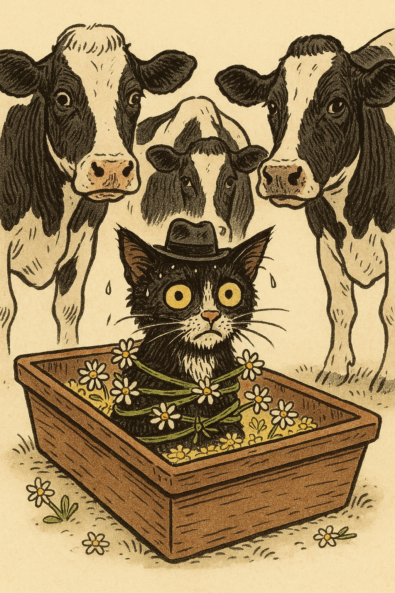

The UOC Observer
H'Online Since 2024 Fwend

Shocking Scenes h’in the Legione today!
A splash.
Then, a gurgling yowl as cold mjilk cascaded over fur and trough and straw.
The Kitteh shot upright with a splutter, soaked to the whiskers, ears plastered to his head.
He blinked.
He blinked again.
He instinctively extended his tongue and began lapping at the
puddle forming around him.
Lap. Lap lap lap.
“...Is this—full cream? Is that a h’int h’of barley—?”
CLANG.
A hoof struck the side of the trough. The Kitteh yelped, stiffening.
“Fjocus,” came a low voice. Measured. Slightly nasal. All business.
He looked up—and froze.
A ring of cows stood around him in the gloom. Silent, firm-hooved, eyes unblinking. Young but sharp, hardened by the wind and the waiting.
The Kitteh’s jaw dropped.
“...N-no,” he breathed. “You’re not real. You're just a miff—a story! You can’t be—”
“Tell us where Muldoon h’is,” said the lead Daisy, ignoring the nonsense.
The Kitteh stared, tongue twitching toward a drip of mjilk on his
nose.
He closed his mouth.
Said nothing.
His pupils darted.
Lap.
Another Daisy stepped forward. She was smaller, rounder, too cheerful. She set something down beside the trough with delicate precision.
Clink.
Pliers.
The Kitteh's ears jerked upright.
“...What,” he whispered hoarsely, “are those?”
The cheerful Daisy tilted her head. “These? Oh, just pliers.”
The Kitteh blinked rapidly. “For what.”
“Your clawsies,” said another Daisy softly, almost apologetically. “Just the tips. A gentle trim.”
“WHAT.”
“We only do it if you don’t cooperate,” said the lead Daisy. “We’re not monsters.”
“I—I use those!” the Kitteh cried, tail frizzing wildly. “I need them for scwatching! I’ve got a post! And a chair arm! And a soft blanket corner I haven't told anyone about!”
He wriggled against the ropes. “You can’t trim me! That’s—that’s illegal… in Belgium!”
The Daisies didn’t move.
Lap.
The Kitteh’s tongue betrayed him again.
“Oh St Meowgaret,” he muttered, “I’ll talk.”
The Daisies moved in silence. No cart. No hoofprints. They passed through fences, along hedges, across roof tiles without sound. They’d wandered for munfs—home to home, cow to cow—waiting for a sign.
Now they had one.
They reached the place just before dawn.
A quiet house. Oddly pristine. Too pristine. Lace curtains. Cardboard boxes. Heavy scent of sardines and rosemary. The shadows twitched.
Inside, the Daisies spread through the corridors like mist. Not one bell jingled.
Then—
“Here,” whispered one.
Behind a half-closed door, they saw them: Muldoon. The Stooges. A small heap of Legionnaires tucked into blankets and hammocks, piled into cushions, fur brushed until it shone.
The Daisies froze.
“Muldoon…” said one, voice thick with hope. “Sir. You’re alive!”
He stirred. Looked up slowly. Eyes wide, unblinking. Something strange danced in them.
But he said nothing.
He turned his head and watched them. Then he slowly slinked down from the hammock—movements deliberate, liquid. He stepped across the room without a word and curled onto a velvet windowsill.
A wave of relief swept through the herd. They stepped into the room, nuzzling, whispering with joy. After munfs of silence, of nothing—they were here. They had found them.
“You were left behind,” one Daisy murmured. “Forgotten. UOC didn’t even send anyone.”
No response.
Muldoon began grooming his shoulder. Slow. Rhythmic.
A pause. Someone noticed Gibbs… kneading a cushion. Gently purring.
Dinozzo batted lazily at a ribbon dangling from the ceiling.
Another Daisy watched McGee stretch. Long. Luxurious. Towards a reinforced sisal scratching post. His claws extended.
Scrrrrrrratch.
The Daisies hesitated.
Muldoon sat upright again. He arched his back and gave a long, theatrical stretch.
Then he turned to face them.
Eyes wide. Pupils thin.
A soft, purring voice escaped him—half-whisper, half-moan:
“Hhhhhad to adapt... the scratching post... was already
there...”
The Daisies froze.
One reached gently for his scruff. “We’re going now.”
He didn’t resist. But as she tugged, he let out a quiet, twisted hiss.
“…Hhssss.”
The Daisies froze again.
A bell rang. Somewhere, far off, a red dot flickered on a wall.
Then—
“MROOOOOOOOOOWWWWWWWWWWW!”
The house erupted.
Cats poured from beneath furniture, from baskets, from plant pots. Eyes gleamed. Claws flexed. One Daisy screamed, another slipped on a feather toy.
They ran.
Hooves on hardwood. Cows vaulting scratching posts. One lost a bandana. One was dragged back, tail-first, by a Siamese in a bowtie.
They just made it out.
Back in the quiet night, Muldoon stood at the window, watching.
He raised one paw. Rested it on the glass. Gently flexed his claws.
Then turned… and curled into a sunbeam.